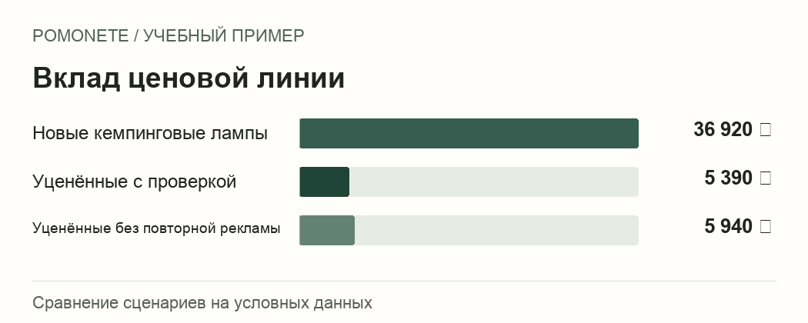

Как селлеру посчитать цену новой и уценённой версии товара
Аналитика Яндекс Маркета по маржинальному доходу двух ценовых линий при разном состоянии товара.
Продавец ламп задаёт отдельные условия для новых и уценённых изделий, где у площадки есть подходящий способ продажи соответствующего состояния товара. В аналитике он видит более низкую цену уценки. У решения есть ещё стоимость проверки и различный исход покупателей, которые требуется сравнить по деньгам.
Как учитывать состояние
Перед оценкой выделите одинаковые состояния и полностью опишите комплектацию в источнике учёта. Для уценки используйте согласованную стоимость остатка, избегая повторного списания, если оно уже было отражено. Переменные операции со складом записывайте по фактическим единицам.
Чтобы пересобрать расчёт «Вклад ценовой линии» для своего магазина, перенесите в него исходные числа. В формуле A обозначает «доход с доставленной единицы, ₽», B обозначает «себестоимость и переменные затраты, ₽», C обозначает «доставки», D обозначает «разовые затраты линии, ₽». Удельную разницу умножают на количество. Последняя величина относится ко всему сценарию и учитывается один раз. Запишите рядом период и охват каждого среза. Для оценочных строк оставьте пояснения рядом с исходными значениями. При чтении сводки будет видно, какие из них пока подтверждены.
Вклад ценовой линии = (A − B) × C − D
| Условие | Доход с доставленной единицы, ₽ | Себестоимость и переменные затраты, ₽ | Доставки | Разовые затраты линии, ₽ | Вклад ценовой линии |
|---|---|---|---|---|---|
| Новые кемпинговые лампы | 2 850 | 2 010 | 48 | 3 400 | 36 920 ₽ |
| Уценённые с проверкой | 1 690 | 1 200 | 21 | 4 900 | 5 390 ₽ |
| Уценённые без повторной рекламы | 1 690 | 1 200 | 16 | 1 900 | 5 940 ₽ |

В сценарии «Новые кемпинговые лампы» в формулу подставляем доход с доставленной единицы, ₽ = 2 850, себестоимость и переменные затраты, ₽ = 2 010, доставки = 48, разовые затраты линии, ₽ = 3 400. Получается 36 920 ₽. Новое предложение продаётся отдельно со стабильной упаковкой и известной закупкой.
В сценарии «Уценённые с проверкой» в формулу подставляем доход с доставленной единицы, ₽ = 1 690, себестоимость и переменные затраты, ₽ = 1 200, доставки = 21, разовые затраты линии, ₽ = 4 900. Получается 5 390 ₽. Состояние описано покупателю. В затраты включена оценка восстановленной стоимости.
В сценарии «Уценённые без повторной рекламы» в формулу подставляем доход с доставленной единицы, ₽ = 1 690, себестоимость и переменные затраты, ₽ = 1 200, доставки = 16, разовые затраты линии, ₽ = 1 900. Получается 5 940 ₽. Меньше видимых покупок, но сокращена отдельная смета запуска.
Если «Новые кемпинговые лампы» взять за исходную точку, «Уценённые с проверкой» меняет показатель «вклад ценовой линии» на -31 530 ₽, а «Уценённые без повторной рекламы» на -30 980 ₽. Между двумя последними строками разница составляет 550 ₽ при вычитании второй из третьей. Смотрите, какой именно вход изменился между строками. Если менялись объём и условия одновременно, итог сравнения относится ко всему сочетанию.
От меньшего результата до большего в таблице 31 530 ₽. При переходе из «Уценённые с проверкой» со значением 5 390 ₽ в «Уценённые без повторной рекламы» со значением 5 940 ₽ условия заданы явно. Этот интервал описывает три построенных случая, а для вероятности исходов нужна история. В рабочей записке полезно назвать минимальное значение, при котором сохранится ваше решение. Если такой порог попадает внутрь интервала, подтвердите спорный параметр до того, как менять процесс.
Где появляется переток спроса
При близком расположении в каталоге второй вариант может забрать от основной линии покупателей с низкой готовностью платить. Сведите оба предложения, сравните итоговый вклад и проверьте, как менялись обычные продажи при доступном запасе. По отдельному SKU этой картины не будет.
В расчёт «Уценённые с проверкой» входят доход с доставленной единицы, ₽, себестоимость и переменные затраты, ₽, доставки, разовые затраты линии, ₽. Для каждого впишите, где взять факт и с каким временным лагом он поступит. Опорой будут экономика заказов и собственная закупочная ведомость. Если один источник обновляется быстрее другого, зафиксируйте общий момент доступности. При существенном разрыве покажите последние данные отдельным оперативным значением.
Выгрузка маркетплейса даёт начисления по операциям. Собственную стоимость закупки, труд и расходники подставляют из учёта магазина с датой действия. Для решения по ассортименту разделите повторяющиеся переменные расходы, затраты на запуск и текущие фиксированные расходы команды. После изменения предложения обновляются и продажи соседних изделий. Счёт по одному товару имеет смысл дополнить итогом той группы, между вариантами которой может переключиться покупатель.
Что сильнее всего меняет результат
Возьмём сценарий «Уценённые с проверкой» с результатом 5 390 ₽. В нём последовательно изменим «доход с доставленной единицы, ₽», «себестоимость и переменные затраты, ₽», «доставки», «разовые затраты линии, ₽». Для каждого входа шаг близок к 10% его исходной величины, целые значения округлены. После каждого опыта возвращаем остальные числа к исходным. Так можно выяснить, какой вход уточнять первым, если перед решением мало времени.
- «Доход с доставленной единицы, ₽» меняется с 1 690 на 1 859. При прежних остальных входах получается 8 939 ₽, сдвиг составляет 3 549 ₽.
- «Себестоимость и переменные затраты, ₽» меняется с 1 200 на 1 320. При прежних остальных входах получается 2 870 ₽, сдвиг составляет -2 520 ₽.
- «Доставки» меняется с 21 на 23. При прежних остальных входах получается 6 370 ₽, сдвиг составляет 980 ₽.
- «Разовые затраты линии, ₽» меняется с 4 900 на 5 390. При прежних остальных входах получается 4 900 ₽, сдвиг составляет -490 ₽.
При выбранных шагах параметр «доход с доставленной единицы, ₽» дал самый крупный сдвиг величиной 3 549 ₽. Если в магазине эта величина меняется в узком диапазоне, подставьте обе его границы. Для связанных условий добавьте отдельную строку с одновременным изменением входов и поясните их связь в примечании.
Уточните, какие деньги вернутся при реализации остатков вне этой линии. Для корректного выбора обе альтернативы должны содержать оценку одного и того же товара в сопоставимом состоянии и на одну дату. Тогда видно, за какой добавочный результат платит отдельная выкладка.
Как выставить предел работ
Определите минимальный вклад после проверки, переупаковки и риска нового возврата. Проверьте группу, у которой состояние хорошо описано и результат осмотра сохраняется. По итогам посчитайте вклад двух линий вместе и сравните с простым вариантом вывода остатка из продажи.
Поставьте рядом плановую и фактическую строки сделки с сохранённой себестоимостью. Проверку удобнее начинать с позиций, на которые приходится основной вклад, потом выделять случаи с нестандартной логистикой, возвратом или разовой скидкой. Если после смены состава продаж средняя величина улучшилась, восстановите исходные веса и оцените, сколько прироста действительно получилось на сопоставимых позициях.
Для управленческой встречи подготовьте два небольших примера из рабочих записей. Первый сверяет «вклад ценовой линии» при базовых условиях «Новые кемпинговые лампы». Второй берёт изменившуюся строку и объясняет, какой источник исправлен. Селлеру Яндекс Маркета будет проще повторить расчёт на новой группе, если видны исходные значения, дата анализа и момент, когда итог станет достаточно точным для решения.